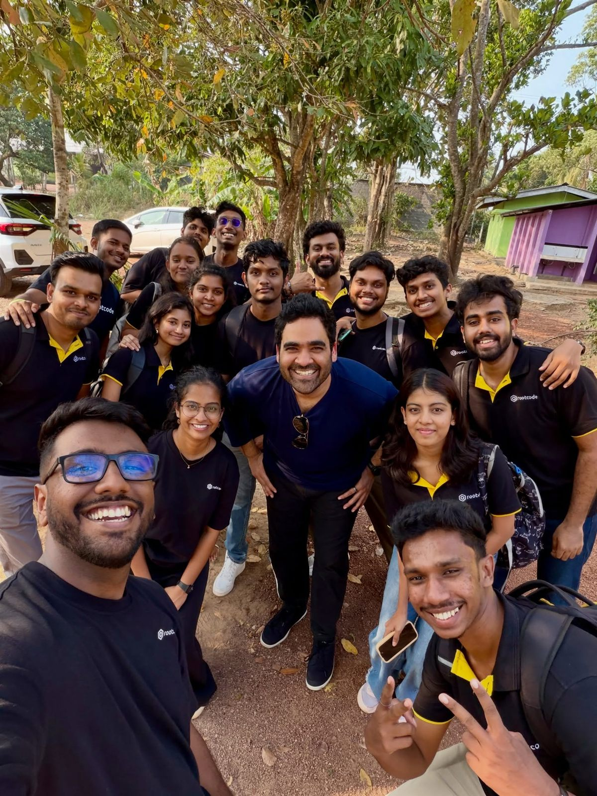
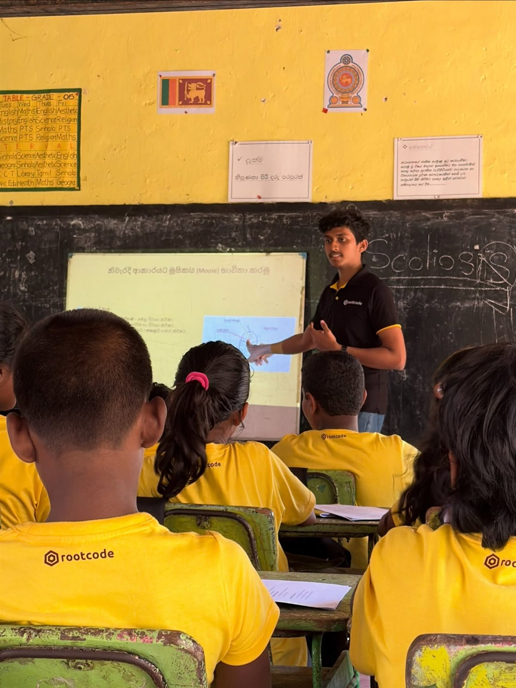
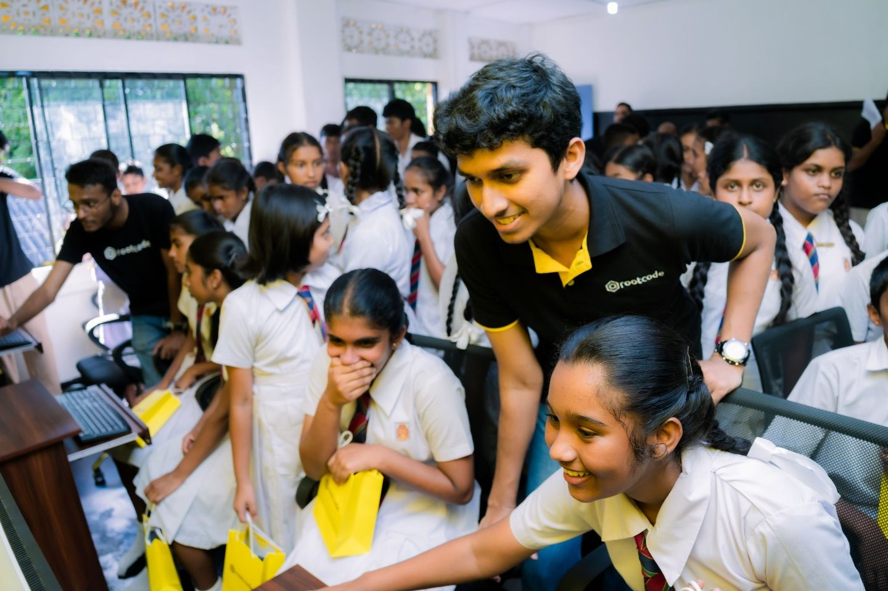
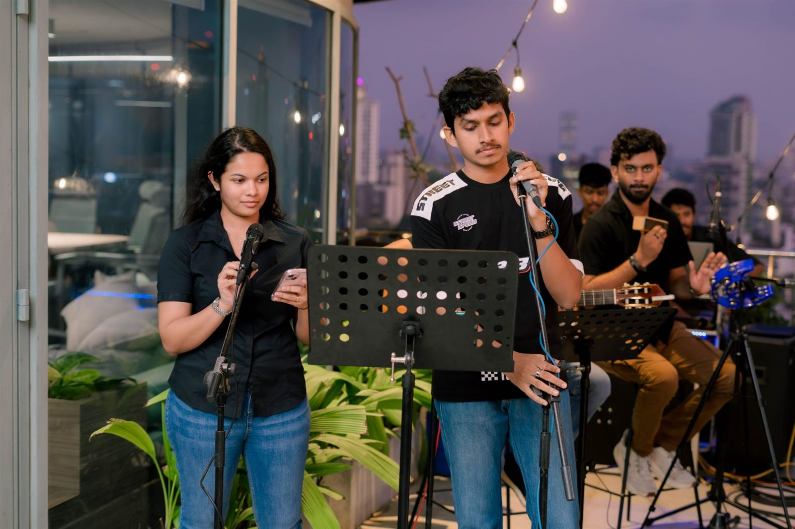
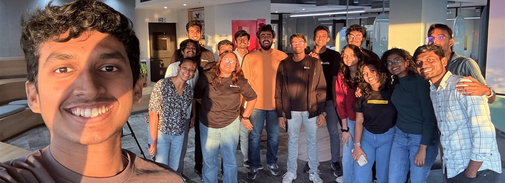

Portfolio · Colombo, Sri Lanka
I build technology for a living, and teach it because I love it.
Software engineer with an internship at Rootcode, a B.Sc (Hons) IT undergraduate at the University of Moratuwa, and a tech tutor and workshop host since 2023.

Software Engineering
React, TypeScript, .NET, Spring Boot: designing and shipping full-stack systems end to end, from backend architecture to production UI.
Teaching Tech
Freelance tutor since 2023, plus tech workshops and mentoring, a passion project that pays its own way.
Writing & Community
A Medium blog on what I build and break, plus regular volunteering in tech community and education initiatives.
About
About Me
I'm a software engineer completing my B.Sc (Hons) in IT at the University of Moratuwa, with a software engineering internship at Rootcode behind me. Since 2023 I've also been teaching tech too, tutoring, workshops, the odd video.
Explaining how things work is nearly as satisfying as building it.
- Open to new opportunities
- Enjoys collaborating with passionate people
- Continuous learner who loves sharing the journey
Experience
Experience & Education
Software Engineer Intern
Rootcode · Colombo, Sri Lanka
Built with .NET Framework and C# on SmartSchool, a multi-tenant school-management platform used by real schools, contributing to a major Organizations & Branches architecture rollout and building a Guardian/Parent portal from scratch.
ICT Teacher, G.C.E. Advanced Level
Freelance · Sri Jayawardenepura Kotte
Teaching ICT to grade 12 & 13 students preparing for the G.C.E. A/L examination, in English medium.
B.Sc (Hons) Information Technology
University of Moratuwa
Faculty of Information Technology. Dean's List, Semester 2.
Gallery
Beyond the Code

Community service with the Rootcode crew
Teaching a computer literacy class
Hosting a school visit at Rootcode
Taking the mic on a rooftop night
With the team after hosting a speaking club sessionProjects
Selected Projects
SmartSchool
Multi-tenant school-management platform used by real schools. I contributed to a major Organizations & Branches architecture rollout, built the Guardian/Parent portal from scratch, and shipped an Access Control feature end-to-end.
AuctiX
Real-time, transparent online auction platform with live bidding, seller auction management, and full auction exploration with filtering and search.
Automated Exam Delivery System
A Google Apps Script system that automates weekly delivery of revision papers to my students, replacing a manual routine I used to run by hand every week.
ScoreHub
A React Native (Expo) app for following live sports scores, browsing matches and team details, and tracking favorites with secure accounts and dark mode.
Smart Exam Hall
An automated exam hall system using fingerprint scanning to register, verify, and mark student attendance, with a desktop client to display allocation and exam status.
Writing
From the Blog
I Was Tired of Manually Sending Exam Papers Every Week — So I Built a System That Never Forgets
How a weekly WhatsApp routine for distributing exam papers became a fully automated system, using free Google tools.
Best AI for Brainstorming in 2026?
A hands-on comparison of ChatGPT, Gemini, Claude, Grok, and Perplexity for brainstorming.
What I Learned from My First PCB Design
Real lessons from designing my first PCB, beyond the usual tutorials.
My Portfolio Web v1.0
The story of building this portfolio from scratch, and what I learned along the way.
Contact
Get In Touch
Skip the form and just send me an email directly. I read and reply to everything myself.
tharinedirisinghe10@gmail.com